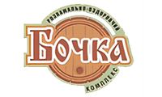
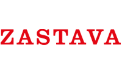
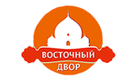
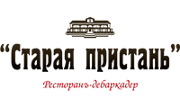

МИ ДИВУЄМО, ЗАВОРОЖУЄМО І ЗАПАЛЮЄМО ВАШ НАСТРІЙ!
Представляємо вам наш Театр Вогню «Сварожичи» - один з кращих і захоплюючих колективів в Україні. Ми робимо висококласне, цікаве, запальне вогняне шоу, доповнене яскравою піротехнікою, музикою.
Перед вами виступлять справжні професіонали в своїй справі і подарують Вам незабутні враження! Всі наші номери різні за характером і за стилем, починаючи від ліричних і ніжних, до жорстких, швидких, комічних і просто «вибухових».
А також, можемо запропонувати для вашого свята веселих і завзятих Ходулістів, які будуть супроводжувати гостей, розважати дітей і брати активну участь в вашому торжестві. У нашому арсеналі є широкий вибір образів наших високих акторів.
МИ ГАРАНТУЄМО МІСТИЧНУ І ЧАРІВНУ АТМОСФЕРУ ВАШОГО СВЯТА, І ПОДАРУЄМО ВАМ ЯСКРАВЕ НЕЗАБУТНЄ ВРАЖАЮЧЕ ВИДОВИЩЕ, ЩО НАДОВГО ЗАПАМ'ЯТАЄТЬСЯ У ВАШИХ СЕРЦЯХ.
ШОУ
Ми робимо танцювальне вогняне шоу з театралізованими постановками, що і відрізняє нас від інших колективів.
Вогняні шоу
Вогняне шоу від Театру Вогню «Сварожичи» — це цікаве вечірнє видовище, яке можна влаштувати в будь-яку пору року і в будь-яке свято, будь це день народження, весілля, ювілей, Новий рік, дитяче свято, корпоратив або масштабний міський захід.
Показати всі вогняні шоуШоу велетнів
Ходулісти — прикраса вашого весілля, вечірки або корпоративу. Ми робимо постановочні номери під музику, супроводжуємо молодят під час фотосесії, зустрічаємо гостей біля ресторану, граємо з дітьми і приколюємося над дорослими!
ПереглянутиПіротехнічні шоу
Піротехніка додає масштабності і грандіозності вогняному шоу. Вогненно-піротехнічне шоу — це приголомшливе видовище, яке ніколи не залишить байдужим навіть найвибагливіших поціновувачів мистецтва.
ПереглянутиМісця наших виступів:
- 
-

- 
-

-

-

-

-

-

-

-

-

- 
-

-

- 
-

-

-

Дзвоніть зараз і ми влаштуємо вам справжнє свято!
Театр Вогню «Сварожичи» - це оригінальні уявлення, в яких вміло поєднуються вогонь, танець, театр, хореографія, піротехнічні ефекти та інсталяції.
Наша головна мета - створювати висококласне фаєр шоу, яке пронизане театральними постановками та акторською майстерністю.
(063) 537-80-89
(096) 363-93-49
Відгуки
Я не однократно видела выступления Театра Огня "СВАРОЖИЧИ". Они мастера своего дела, Волшебники, Профессионалы с большой буквы! Очень крутые, световые эффектные выступления! Огненное шоу просто на высоте, яркие впечатления гарантированны! Каждое выступление по своему индивидуально и шикарно!Каждый танец как произведение искусства!
Валя Тарасова, Черкаси Через VK.COM 25 січня в 11:48Театр Огня "Сварожичи" это что то необыкновенное, потрясающее, восхитительное! Это действительно мастера своего дела! Их признание - нести людям душевную радость, восторг. Это захватывающее оригинальное зрелище даёт людям энергетический заряд, душевное обогащение от этого прекрасного. необычного зрелища! Театр Огня "СВАРОЖИЧИ" неоднократно выступал на тех мероприятиях, где я проводила свадьбы, юбилеи, корпоративнае праздники, вечеринки. Настроение у людей поднимается на все "100". Советую - приглашайте! Уникальная возможность удивить ваших гостей подарить им радость и незабываемые ощущения!
Екатерина Мащенко, Черкассы 15 лютого в 10:18Очень бомбезное шоу! Заказывали на свадьбу и остались довольные! Гости все в восторге! Ребята позитивные, энергичные, классные! Просто супер-супер! Все кто сомневается заказывать или нет, 100% заказывайте! Не пожалеете! Ребята профессионалы! Лучшие в своём деле! Сварожичи, спасибо вам огромное, вы сделали нашу свадьбу незабываемой!
Яна Тырсенко, Черкаси Через FACEBOOK.COM 15 жовтня в 17:50"Классное шоу! Очень энергично, профессионально и ярко делают свое дело! Лучшее шоу, которое приходилось видеть!! Все рекомендую театр Сварожичи!"
Владимир Таран, Черкассы Через FACEBOOK.COM 25 лютого в 20:55"Спасибо вам, вашему коллективу. Прекрасный номер, красивое шоу, идеальное завершение для свадьбы. Костюмы, музыка, танец все идеально, красиво и романтично. Гости в восторге, мы счастливы."
Регина, Черкассы 9 серпня в 16:41"З НОВИМ, 2018 РОКОМ - НОВОМИРГОРОДЕ! На вщерть заповненній центральній площі З1 грудня року зібралась неймовірна кількість новомиргородців. Їх вітали представники міської ради, колективи та солісти міського будинку культури, театр вогню “Сварожичі”. Та у цьогорічному виступі приборкувачів вогненної стихії багато чого нового. Їх окремі постановки, такі як "Чикаго", "Венеціанський карнавал", історії любові, піратські, українські та абстрактні номери, можна впевнено назвати театралізованим дійством. Новомиргород став одним з перших серед міст, де у програмі виступу було поєднано номери та фінальний святковий феєрверк."
Игорь Забажан, Новомиргород 30 січня в 02:08"Знаю ребят много лет, это настоящие профессионалы и мастера своего дела, заказывайте у них украшение своего праздника и приятные и яркие впечатления останутся с вами на долгое время"
Оксана Игнатьева, Смела 10 липня в 12:49"Мега крутое шоу, очень романтичное, зажигательное! Наполняет драйвом!"
Инна, Черкассы 2 березня в 16:36"Замовляли на Весілля. Все дуже сподобалось. Гості всі в захваті!"
В'ячеслав, Черкаси 24 квітня в 14:48"Мы заказывали шоу "СВАРОЖИЧИ" на свадьбу! Были в восторге от грандиозного шоу. Эмоционально, ярко. Заводные танцы с огнём завораживают. Очень хороший подарок на День Рождение, свадьбу. Больше всего нравятся шоу с фейерверками. Всем советую. Заказывали у Александра"
Валя Тарасова, Черкассы 15 жовтня в 18:03"Вы молодцы! Очень яркое шоу, незабываемые эмоции! Огромное спасибо от организаторов фестиваля за качественное, высокопрофессиональное шоу для гостей фестиваля"
Наталья, Черкассы 29 листопада в 21:56"Проводила свадьбу в р-не Чайка жених и свидетель иностранцы (нашего языка не знают), невеста с Черкасс. Но когда вышли на улицу и увидели фаер шоу ОГНЯ, гости не отрывали глаз, от такого "зрелища" Жениху не надо был и перевод на его лице был весь перевод, особенно когда зажигали факелом сердца, эмоции восторга его переполняли, свидетель не отрывался от телефона, включив видео. Приглашайте "СВАРОЖИЧИ", профессионализм на высшем уровне!"
Екатерина Мащенко, Черкассы 28 грудня в 19:32"Супер крутое фаер шоу!! Очень всем понравилась ваша романтическая программа! Многие гости аж прослезились! Спасибо вам огромное! Наша свадьба была в ресторане Виктория и на фоне заката ваше шоу было супер. Всем рекомендуем именно Сварожичей!!!"
Татьяна Котко, Черкассы 4 квітня в 09:45"Замовляли програму "Двоє" на весілля за межами міста. Артисти приїхали вчасно, виставили якісний звук, піротехніка і вогняні ефекти на висоті)) це було феєричне завершення вечора! Всім рекомендую, шоу варте кожної копійки!"
Олена, Черкаси 6 липня в 12:03"Хотите увидеть яркое, чувственное, незабываемое шоу - обращайтесь в театр огня "Сварожичи". Коллектив подарит Вам и Вашим гостям много положительных эмоций"
Ксения, Черкассы 11 січня в 18:09"Дякуємо! Цей вечір назавжди залишиться з нами. Море позитивних, яскравих і незабутніх вражень. Рекомендуєм всім, тільки "СВАРОЖИЧИ"."
Юлія, Черкаси 10 травня в 21:17